ECG Blog #548 — Hơn một "gia đình"?
Tôi nhận được điện tâm đồ trình bày ở Hình 1. Tôi được cho biết bệnh nhân bị "hồi hộp đánh trống ngực", nhưng ổn định huyết động. Chẩn đoán lúc nhập viện của bà là DKA (nhiễm toan ceton do đái tháo đường – Diabetic KetoAcidosis).
CÂU HỎI:
- Bạn diễn giải điện tâm đồ ở Hình 1 như thế nào?
- Bạn có thể giải thích nhịp này không?

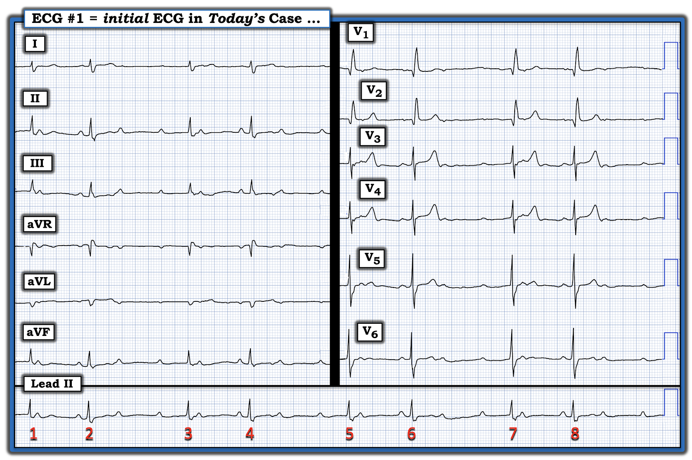
Nhận định "Nhanh" ( = Ban đầu) của tôi:
Đáng tiếc là thông tin tôi được cung cấp về bệnh nhân này còn hạn chế. Dù vậy — tôi thấy nhiều đặc điểm trên điện tâm đồ ban đầu này thật lý thú và đáng bàn luận. Dưới đây là những "suy nghĩ nhanh" ban đầu của tôi về Hình 1:
- QRS rộng với hình dạng phù hợp với dẫn truyền kiểu RBBB (blốc nhánh phải – Right Bundle Branch Block) (tức là chủ yếu dương ở chuyển đạo V1 — kèm sóng S tận rộng ở các chuyển đạo bên I và V6).
- Sóng P có hiện diện trên dải nhịp chuyển đạo II dài — và dù chưa đo, chúng có vẻ ít nhất là khá đều. Và ít nhất ở phía trước các nhát #2,4,6,8 — khoảng PR có vẻ cố định và bình thường (do đó cho thấy có ít nhất một phần dẫn truyền từ xoang, đồng thời xác nhận nhịp này là nhịp trên thất kèm dẫn truyền kiểu RBBB).
- ĐIỂM THEN CHỐT (PEARL) #1: Có nhịp theo nhóm (group beating)! (dưới dạng các khoảng R-R ngắn-rồi-dài lặp đi lặp lại). Khi thấy nhịp theo nhóm đi kèm một nhịp sóng P đều (hoặc ít nhất là gần đều) trong đó có ít nhất một phần dẫn truyền từ xoang — điều này gợi ý một dạng nào đó của dẫn truyền Wenckebach.
Giờ tôi quay lại xem hình dạng QRS:
- Phức bộ QRS ở các chuyển đạo V1 và V2 bắt đầu bằng một sóng Q rộng. Không chắc sóng Q này là hậu quả của nhồi máu cũ, của tăng áp phổi, hay đơn giản chỉ là một hình dạng RBBB ít điển hình hơn. Nhưng cũng nên lưu ý rằng, vì lý do nào đó, hình ảnh rsR' ba pha đặc trưng của RBBB ở chuyển đạo V1 lại không thấy trên bản ghi hôm nay (do đó có thể đáng theo dõi thêm khi chúng ta biết thêm về ca bệnh).
- Sóng T ở chuyển đạo V1, và ở các chuyển đạo trước tim khác, dương trong bối cảnh dẫn truyền kiểu RBBB. Như đã ôn lại trong ECG Blog #204 (Xem ECG Video và Phần bổ sung trong ECG Blog #204 này) — bình thường khi có dẫn truyền kiểu RBBB, sóng ST-T phải hướng ngược chiều với sóng cuối cùng của QRS ở chuyển đạo V1 (và phần lớn thời gian, cả ở các chuyển đạo trước tim khác).
- Thay vào đó — sóng T lại cao và nhọn một cách đáng ngạc nhiên ở các chuyển đạo V2,3,4 ở bệnh nhân này, người nhập viện vì DKA!
- ĐIỂM THEN CHỐT (PEARL) #2: Toan máu cấp nổi tiếng là làm tăng nồng độ K+ huyết thanh ngoại bào ==> Chúng ta cần biết nồng độ K+ huyết thanh! (tức là Người ta tự hỏi các sóng T vùng trước ở Hình 1 thực sự có thể cao và nhọn đến mức nào nếu các thay đổi điện tâm đồ của tăng kali máu không chồng lên hình ảnh ST-T chênh xuống mà lẽ ra chúng ta vẫn chờ đợi khi có dẫn truyền kiểu RBBB).
- ĐIỂM THEN CHỐT (PEARL) #3: Như đã nhấn mạnh trong ECG Blog #275 — "Mọi phán đoán đều không còn chắc chắn" đối với các rối loạn nhịp (đặc biệt là các dạng blốc AV) khi có tăng kali máu — với "tin tốt" là phần nhiều (phần lớn) thời gian, các rối loạn nhịp do tăng kali máu này sẽ hết khi K+ huyết thanh được điều chỉnh.
- Do đó, vì bệnh nhân hôm nay ổn định huyết động với nhịp ở Hình 1 — việc xác định chính xác cơ chế của nhịp lý thú này kém quan trọng hơn nhiều so với điều trị cho bệnh nhân tình trạng DKA (với việc điều trị DKA có khả năng rất cao giúp khôi phục nhịp xoang bình thường).
Dù đã nói vậy — tôi nghĩ sẽ bổ ích nếu tìm hiểu cách đánh giá rối loạn nhịp phức tạp của ca hôm nay.
===========================
Xem kỹ hơn nhịp của ca hôm nay:
Như tôi vẫn thường nhấn mạnh — bước đơn giản là đánh số các nhát và đánh dấu sóng P thường giúp ích vô cùng, vừa để xác định nhịp nhĩ có thực sự đều hay không — vừa để thuận lợi cho việc xác định sóng P có (hay không có) liên quan đến các phức bộ QRS lân cận.
- Các mũi tên ĐỎ trên dải nhịp chuyển đạo II dài ở phía dưới Hình 2 — xác nhận có nhịp xoang nền, dù có thay đổi rất nhẹ ở khoảng P-P (tức là loạn nhịp xoang theo pha thất (ventriculophasic) — rất hay gặp đi kèm với blốc AV độ 2 và độ 3).
- LƯU Ý: Vì mục đích thực hành và cho đơn giản — trong bài này tôi sẽ gọi nhịp nhĩ là "đều", dù biết rằng khoảng P-P có thay đổi nhẹ.

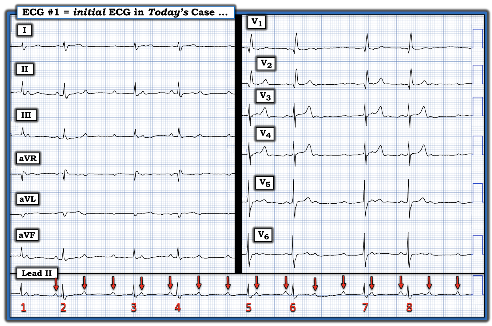
Để thuận tiện cho việc xem kỹ hơn nữa cơ chế của rối loạn nhịp hôm nay — tôi sẽ tập trung vào dải nhịp chuyển đạo II dài (Xem Hình 3 dưới đây):
- Như vừa nêu — các sóng P đứng trước các nhát #2,4,6,8 đều dương và có khoảng PR cố định 0.16 giây. Điều này cho chúng ta biết ít nhất các nhát mang số chẵn này — đều là nhát dẫn truyền từ xoang với khoảng PR bình thường.

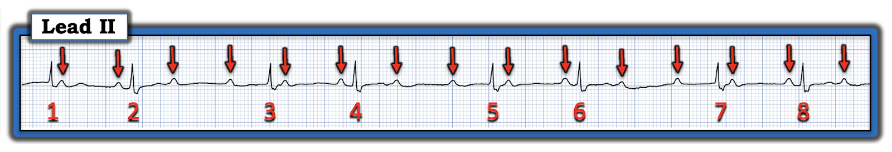
Đáng ngạc nhiên là (như thấy ở Hình 4) — các sóng P được đánh dấu bằng mũi tên XANH LAM đứng trước các nhát #3,5,7 cũng có khoảng PR cố định (dù dài hơn nhiều).
- Điều này gợi ý rằng các sóng P mũi tên XANH LAM này (dù khoảng PR dài tới 0.44 giây) — cũng được dẫn truyền theo một cách nào đó!
- Nếu dải nhịp ở Hình 4 được bắt đầu sớm hơn một chút — rất có thể nó sẽ cho thấy thêm một sóng P mũi tên XANH LAM khác với khoảng PR kéo dài tương tự 0.44 giây xuất hiện trước nhát #1.

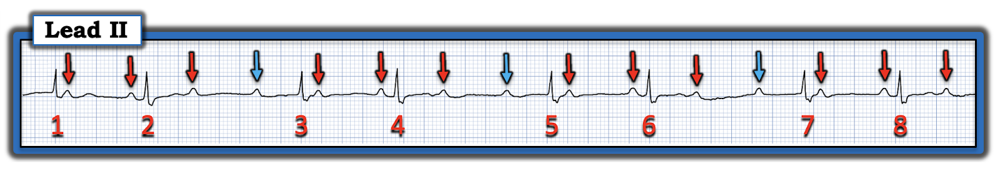
Như vậy chỉ còn lại các sóng P mũi tên VÀNG mà tôi đánh dấu ở Hình 5 — là những sóng P duy nhất chưa được xem xét.
- Bằng phương pháp loại trừ (tức là vì mỗi phức bộ trong 8 phức bộ QRS ở Hình 5 đều đã được giải thích) — các sóng P mũi tên VÀNG này không thể nào đang dẫn truyền.
- Điều này xác định nhịp hôm nay là một dạng nào đó của blốc AV độ 2 — vì một số (nhưng không phải tất cả) sóng P xoang “đúng lúc” được dẫn truyền — còn số khác thì không.
- Cụ thể, có tổng cộng 15 sóng P ở Hình 5.
- 7 trong số các sóng P này (được đánh dấu bằng mũi tên ĐỎ và XANH LAM) dẫn truyền cho 7 phức bộ QRS trong hình này ( = các nhát #2 đến 8).
- 8 sóng P còn lại (được đánh dấu bằng mũi tên VÀNG) — không được dẫn truyền.

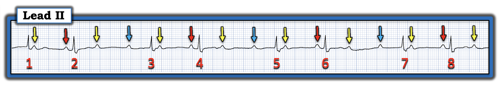
Cần một giản đồ bậc thang …
Nhịp hôm nay thật phức tạp! Bản ghi này là ví dụ cho một trong số ít lần mà dù tôi nhận ra ngay cơ chế chung của nhịp hôm nay — tôi vẫn cần dựng một giản đồ bậc thang (laddergram) để chứng minh giả thuyết của mình.
Những điểm CHÍNH: Tôi muốn bạn nắm được các khái niệm sau:
- Mặc dù cần thời gian và luyện tập để vẽ giản đồ bậc thang một cách thành thạo — việc biết vẽ giản đồ bậc thang không cần thiết để xử trí lâm sàng tối ưu.
- Ngược lại — Học cách đọc giản đồ bậc thang thì DỄ (như tôi sẽ minh họa ngay sau đây) — và điều này có thể giúp lựa chọn phương án xử trí tối ưu.
- Với bạn đọc quan tâm — tôi ôn lại cách đọc và vẽ giản đồ bậc thang trong ECG Blog #188 (nơi tôi cung cấp hơn 140 ví dụ về giản đồ bậc thang — nhiều ví dụ có phân tích từng bước).
Câu trả lời “Nhanh” cho Hình 5:
Chúng ta đã xác định rằng nhịp hôm nay là một nhịp trên thất kèm dẫn truyền kiểu RBBB, sóng P đều và nhịp theo nhóm trong đó một số sóng P “đúng lúc” được dẫn truyền — nhưng các sóng P “đúng lúc” khác lại không được dẫn truyền.
- Điều này xác định nhịp là một dạng nào đó của blốc AV độ 2 — với nhịp theo nhóm gợi ý mạnh mẽ một dạng nào đó của dẫn truyền Wenckebach.
- Như tiêu đề của bài ECG Blog này đã ngụ ý — có nhiều hơn một “gia đình” khoảng PR dẫn truyền xuống thất. Cụ thể:
- Sóng P mũi tên ĐỎ dẫn truyền với PR bình thường.
- Sóng P mũi tên XANH LAM dẫn truyền với PR dài hơn.
- ĐIỂM THEN CHỐT (PEARL) #4: Lời giải thích hợp lý nhất cho việc vì sao có thể tồn tại một "bước nhảy" khoảng PR lớn giữa 2 "gia đình" khoảng PR cố định — là có đường dẫn truyền kép trong nút AV luân phiên dẫn truyền các xung động xoang:
- Sóng P mũi tên ĐỎ dẫn truyền với khoảng PR bình thường 0.16 giây.
- Sóng P mũi tên XANH LAM dẫn truyền với khoảng PR kéo dài 0.44 giây.
Giản đồ bậc thang tôi đề xuất …
Dưới đây là cách tôi dựng giản đồ bậc thang này từng bước:

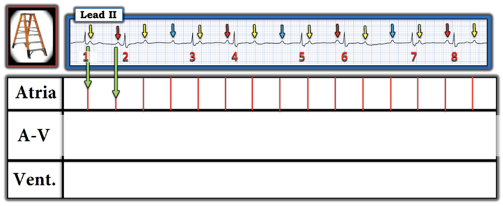
===========================

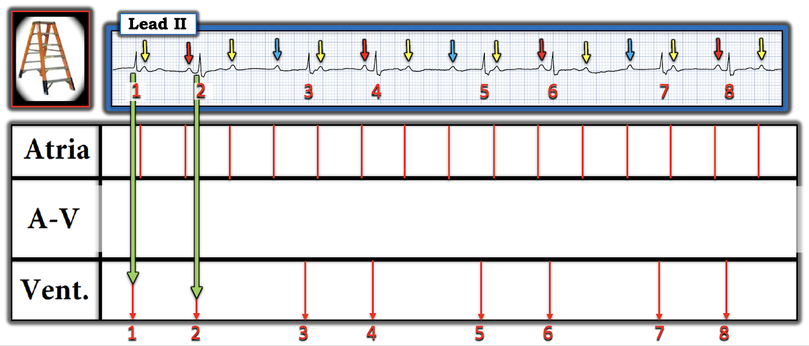
===========================

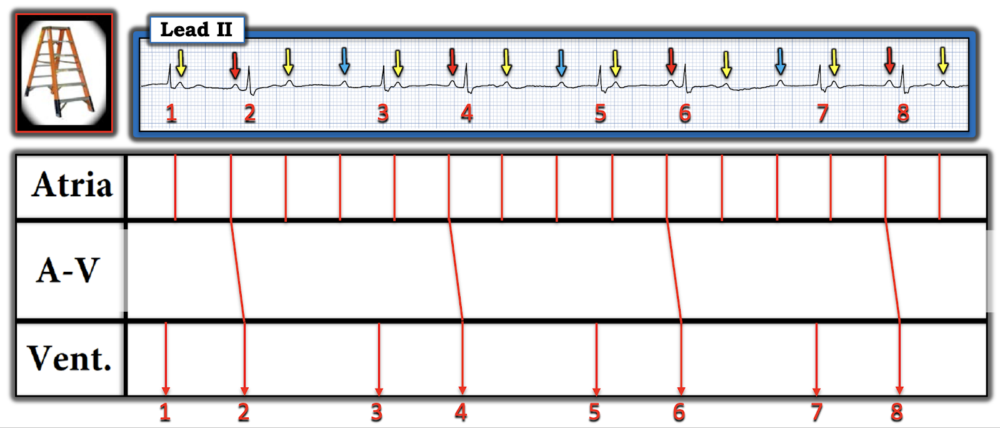
===========================

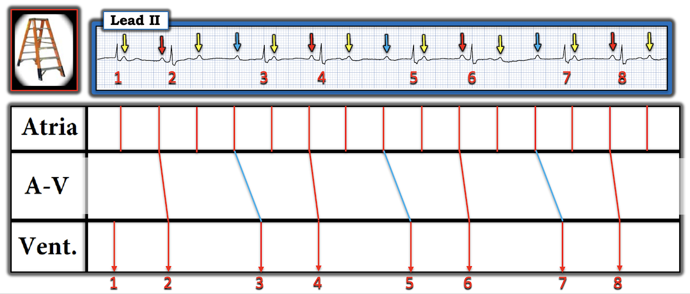
===========================

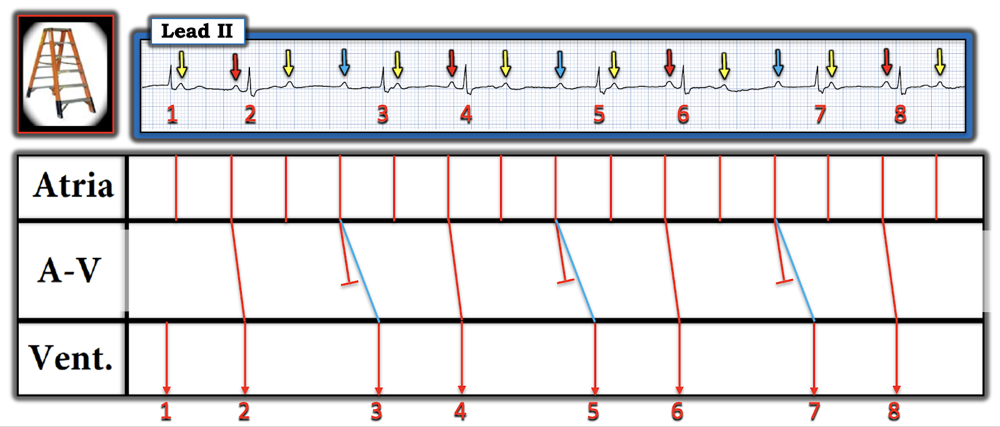
===========================

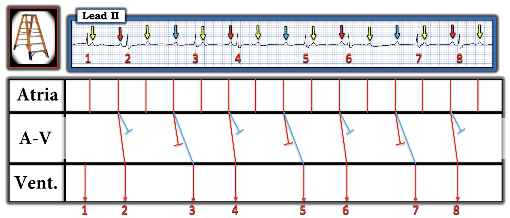
= = = = = = =
LƯU Ý: Như vậy còn lại 8 sóng P mũi tên VÀNG — không sóng nào trong số đó được dẫn truyền ...
===========================

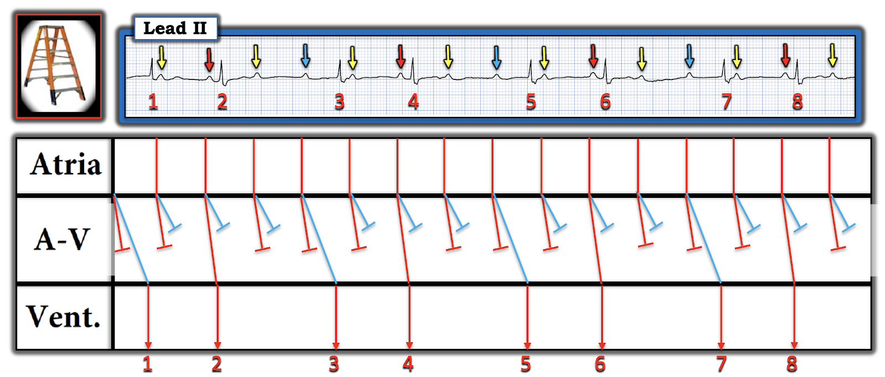
= = = = = = =
Nhận định: Một cách giải thích khả dĩ cho cơ chế của nhịp hôm nay là có thể có blốc AV 3:1 ở đường nhanh của nút AV, luân phiên với blốc AV 3:1 + blốc AV độ 1 ở đường chậm của nút AV.
=============================
Nhiều hơn một khả năng ...
Những gì trình bày dưới đây đi vượt rất xa ra ngoài phần cốt lõi!
- Mục đích của tôi khi trình bày một giản đồ bậc thang thay thế cho giản đồ tôi vừa dựng ở Hình 12 — là để minh họa nguyên tắc rằng với các rối loạn nhịp phức tạp — thường sẽ có nhiều hơn một cách giải thích khả dĩ!
- Nếu không có thăm dò điện sinh lý EP (ElectroPhysiologic) — sẽ không thể biết chắc cách giải thích nào là đúng.
- Biết cách giải thích nào là "đúng" không quan trọng đối với xử trí lâm sàng tối ưu.
- Trừ khi mục tiêu của bạn là "đào sâu" vào các chi tiết của việc diễn giải rối loạn nhịp phức tạp — bạn không cần bận tâm đến chuyện "Như thế nào" và "Tại sao" của việc vẽ giản đồ bậc thang thay thế này.
- Với những bạn đọc muốn "đào sâu" — tôi đưa ra một giản đồ bậc thang thay thế mà tôi cho là nhiều khả năng hơn so với giả định có blốc AV 3:1 đồng thời ở cả hai đường dẫn truyền trong nút AV như Hình 12 gợi ý.
Dưới đây là cách tôi dựng giản đồ bậc thang thay thế này:

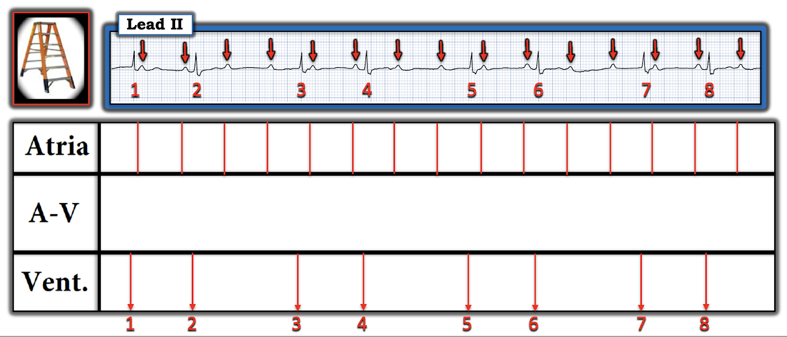
===========================

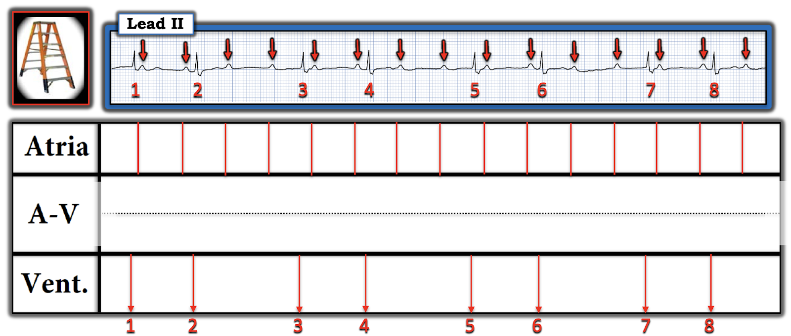
= = = = = = =
LƯU Ý: Tôi biểu thị theo sơ đồ khái niệm blốc AV hai tầng bằng cách vẽ một đường chấm chấm màu ĐEN trong Tầng Nút AV.
===========================

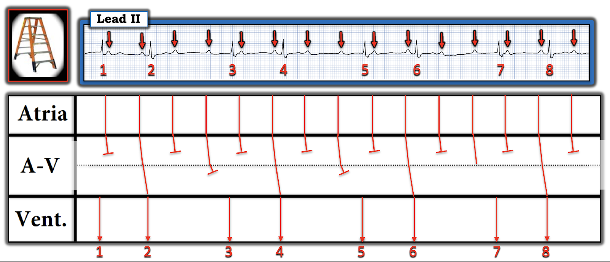
===========================

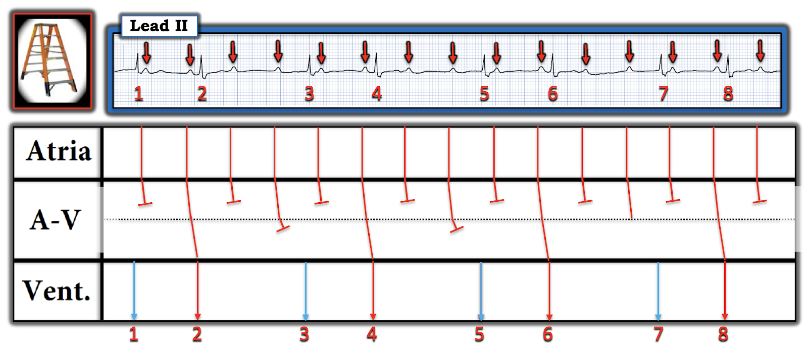
===========================

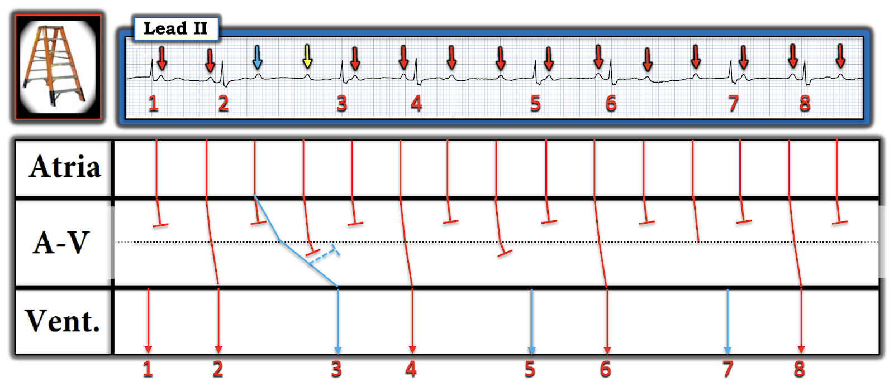
===========================

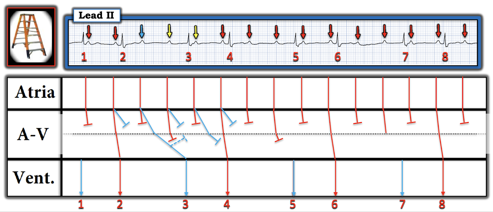
===========================

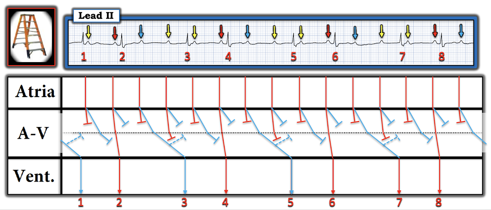
= = = = = = =
Nhận định: Giản đồ bậc thang thay thế này giả định rằng có blốc hai tầng ở đường ra khỏi nút AV với blốc 2:1 luân phiên trong đường dẫn truyền kép trong nút AV.
===========================
Tóm lại:
"Câu trả lời nhanh" cho rối loạn nhịp phức tạp hôm nay là: sự hiện diện của sóng P đều với 2 "gia đình" khoảng PR dẫn truyền có bước nhảy khoảng PR lớn — đi kèm với nhịp theo nhóm — gợi ý mạnh mẽ có đường dẫn truyền kép trong nút AV.
- Ngoài ra — việc phát hiện các sóng P “đúng lúc” liên tiếp không dẫn truyền gợi ý có thể có blốc Wenckebach hai tầng ở đường ra khỏi nút AV.
- Việc dựng được một giản đồ bậc thang khớp ủng hộ giả thuyết của tôi rằng đây là một cơ chế khả dĩ cho rối loạn nhịp hôm nay.
- DIỄN TIẾN CỦA CA BỆNH: Như đã nêu — bệnh nhân này bị DKA. K+ huyết thanh lúc nhập viện = 7.0 mEq/L. Điều trị DKA (kèm điều chỉnh tình trạng tăng kali máu) đã giúp khôi phục nhịp xoang bình thường. Trên đường đi đó — nhịp ban đầu của ca hôm nay mang lại cho những người đam mê rối loạn nhịp một câu chuyện lý thú về cơ chế nhiều khả năng của rối loạn dẫn truyền phức tạp này.
==================================
Lời cảm ơn: Tôi xin cảm ơn người đã đóng góp ẩn danh ca bệnh hôm nay.
==================================